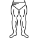

<ion-header [translucent]="true">
    <ion-toolbar>
        <ion-title>
            Tab 1
        </ion-title>
    </ion-toolbar>
</ion-header>

<ion-content [fullscreen]="true">

    <div class="scrolling-wrapper">
        <a class="card  flex bg-[#73E8C1] flex-col m-5 items-center justify-between rounded-md p-2" [routerLink]='["/exercices-list/chest"]'>
            

        </a>
        <div class="card  flex border-solid border-2 border-gray-00 flex-col m-5 items-center justify-between rounded-md p-2">
            
        </div>
        <div class="card  flex  flex-col m-5 items-center justify-between rounded-md p-2">
            
        </div>
        <div class="card  flex flex-col m-5 items-center justify-between rounded-md p-2">
            
        </div>
        <div class="card  flex  flex-col m-5 items-center justify-between rounded-md p-2">
            
        </div>

    </div>
</ion-content>